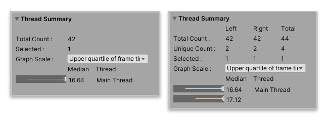

Thread Summary¶
The Thread Summary pane displays information about the threads in the data set. You can use the information in this pane to compare and understand the number of threads used in the data set.
By default, the Profile Analyzer only displays information about the Main Thread. To add more threads to the analysis, use the Thread button in the Filters pane. For more information, see the documentation on the Filters pane.

The Thread Summary pane in Single View (left), and Compare View (right)
Statistics¶
Statistic |
Description |
|---|---|
Total Count |
The total number of threads in the data set, or data selection. The Compare view also has a Total column, which displays the total count for all threads across both data sets. |
Unique Count |
The number of unique threads in each data set. A unique thread is one that is not in the other data set. The Total column displays the total of unique threads across both data sets. |
Selected |
The number of threads selected in the data set. To add more threads use the Thread button in the Filters pane. |
Graph Scale |
Select a scale for the plot. You can choose from: |
At the bottom of the pane, there is a summary of the median run time of the current filtered threads with a box and whisker plot of them. You can use these graphs to analyze on what threads the most time is spent.